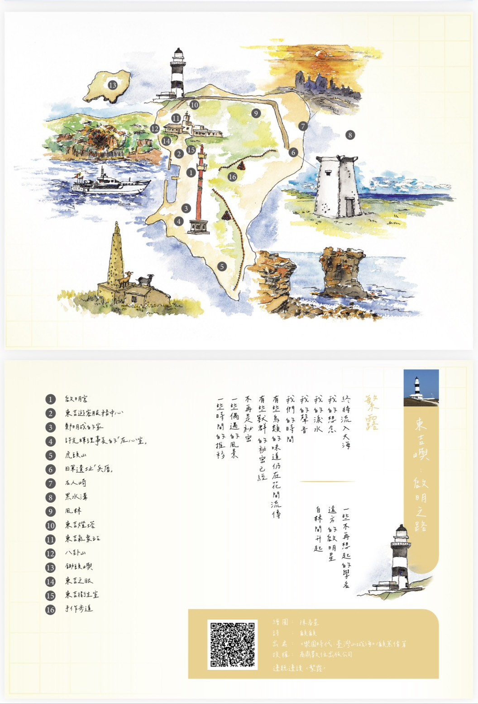
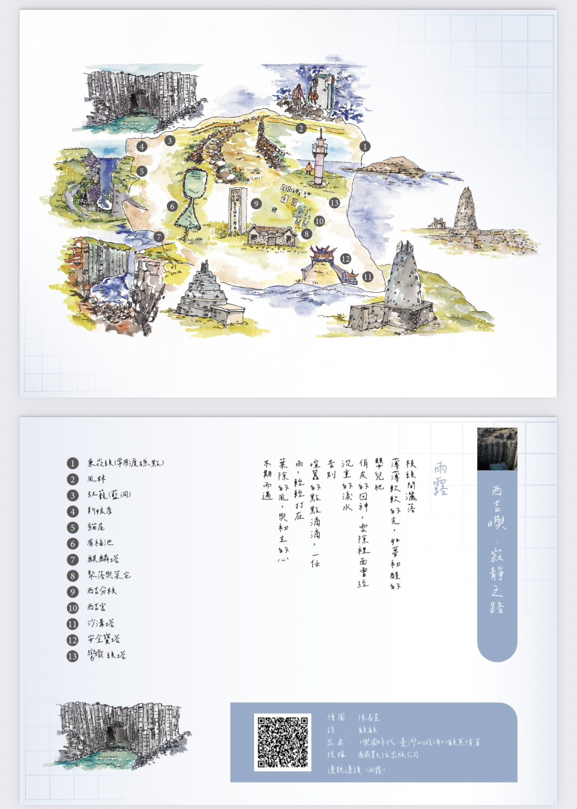
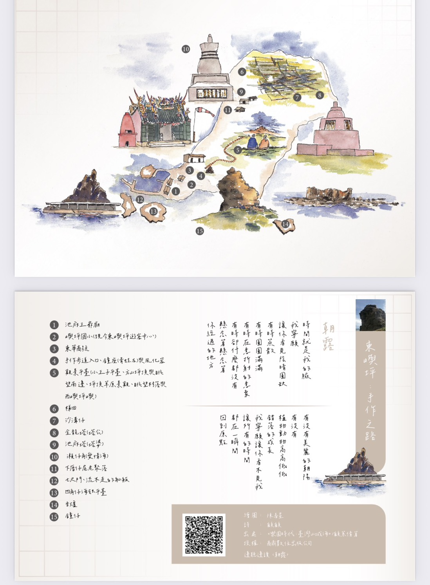
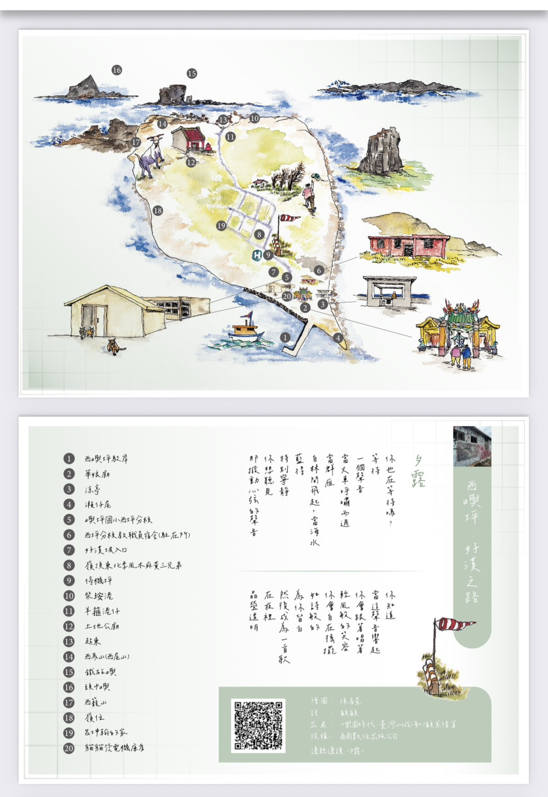

關於本書
《樂園時代》引領讀者深入臺灣的山城海景。本次分享會特別聚焦澎湖「南方四島」，結合詩文與現場音樂分享，帶您領略土地的溫度。
- 聽顧顧分享澎湖褒歌與音樂創作
- 文學創作與譜曲的心路歷程
- 商鼎數位出版 精心呈現
The Sound of Islands
南方四島：啟程與之路

啟明之路 ‧ 〈繁露〉
東吉嶼

寂靜之路 ‧ 〈雨露〉
西吉嶼

手作之路 ‧ 〈朝露〉
東嶼坪

多漢之路 ‧ 〈夕露〉